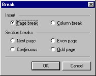

| |
| A propos Commandes Sommaire Pourquoi AbiWord? Généralités Environnement SDI Vs. MDI Installation Windows Linux Intel Linux PPC BeOS Intel BeOS PPC Solaris FreeBSD Les bases #1 Les bases #2 La saisie Le formatage Les paragraphes Les tabulations Les colonnes Les sections Les styles Insertion d'objet Imprimer Rechercher / Remplacer Personnalisation Raccourcis clavier abisource.com FAQ Crédits |
Les sauts et les sauts de sectionsAbiWord peut insérer des sauts de pages et de colonnes et des sauts de sections. Pour insérer un saut dans un document, il suffit de positionner le curseur d'insertion où vous voulez l'insérer puis d'aller dans le menu Insertion et de cliquer sur "Saut..." La fenêtre ci-dessous apparaît alors:  Les sautsLa rubrique Insert (Insertion) permet de définir des sauts de pages et de colonnes manuellement, et cela même si AbiWord gère ces sauts automatiquement.
Cliquer ensuite sur le bouton "OK" pour valider ou sur "Cancel" pour Annuler. Un saut de page peut également être inséré à l'aide du clavier en appuyant simultanément sur les touches "Ctrl" et "Entrée". Les sauts de sectionsUne mise en page spécifique, comme l'orientation de la feuille ou les marges, est appliquée par défaut à tout le document. Pour cela, les sections permettent de définir des mises en page spécifiques (comme l'orientation de la feuille) à l'intérieur d'un même document. La rubrique "Section breaks" (Saut de section) n'a pas été encore implémentée dans la dernière version d'AbiWord. Cependant, pour insérer une section, il est possible de positionner le curseur d'insertion à l'endroit où vous voulez insérer la section puis appuyer simultanément sur les touches "Alt" et "Entrée". Cela peut être utilisé par exemple pour insérer une section à deux ou trois colonnes après une section mono colonne. |